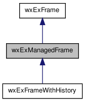

Offers an aui managed frame with a notebook multiple document interface, used by the notebook classes, and toolbar, findbar and vibar support. More...
#include <wx/extension/managedframe.h>
Inheritance diagram for wxExManagedFrame:

Collaboration diagram for wxExManagedFrame:

Public Member Functions | |
| wxExManagedFrame (wxWindow *parent, wxWindowID id, const wxString &title, long style=wxDEFAULT_FRAME_STYLE) | |
| Constructor, registers the aui manager, and creates the bars. | |
| ~wxExManagedFrame () | |
| Destructor, uninits the aui manager. | |
| virtual bool | AllowClose (wxWindowID WXUNUSED(id), wxWindow *WXUNUSED(page)) |
| Returns true if the page can be closed. | |
| virtual void | OnNotebook (wxWindowID WXUNUSED(id), wxWindow *WXUNUSED(page)) |
| Called if the notebook changed page. | |
| virtual void | SyncCloseAll (wxWindowID WXUNUSED(id)) |
| Called after all pages from the notebooks are deleted. | |
| wxAuiManager & | GetManager () |
| Gets the manager. | |
| void | GetViCommand (wxExVi *vi, const wxString &command) |
| Gets a command line vi command. | |
| void | HideViBar () |
| Hides the vi bar. | |
| void | ShowViMessage (const wxString &text) |
| Shows text in vi bar. | |
| void | TogglePane (const wxString &pane) |
| Toggles the managed pane: if shown hides it, otherwise shows it. | |
Protected Member Functions | |
| virtual void | DoAddControl (wxExToolBar *) |
| Add controls to specified toolbar. | |
| void | OnCommand (wxCommandEvent &event) |
| Handles command event. | |
| void | OnUpdateUI (wxUpdateUIEvent &event) |
| If there is a focused STC, updates the status bar. | |
Detailed Description
Offers an aui managed frame with a notebook multiple document interface, used by the notebook classes, and toolbar, findbar and vibar support.